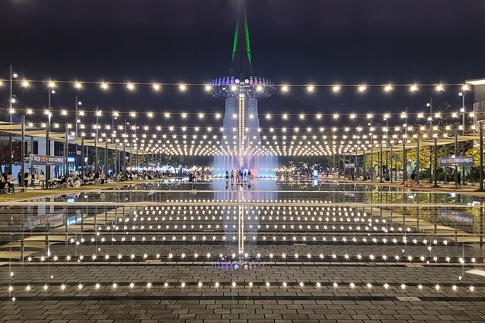

忠清道・大田 映像で見る場所: 長太山自然休養林と韓非塔
動画「Daejeon Day Trip」に登場する大田の二か所、静かな森の散策路がある長太山自然休養林と、都市のランドマークである韓非塔を紹介します。
忠清道と大田について
忠清道には、古代百済の旧都である公州と扶余があります。一方、大田は韓国で「パンの街」として知られています。この地域の食のイメージには、城西堂（ソンシムダン）のベーカリー、忠州のマクチャン（牛または豚の腸の焼き物）、清州のスユク（豚肉の茹で薄切り）、そして論山や天安の市場グルメなどがあります。この記事では、動画「Daejeon Day Trip」に登場する大田の二か所を取り上げます。
動画に登場する場所
長太山自然休養林
木々の間を静かに歩ける自然休養林です。市内観光の合間に落ち着いた時間を過ごせる場所で、「Daejeon Day Trip」では大田の日帰りルートの立ち寄り先の一つとして紹介されています。
韓非塔

大田でもよく知られたランドマークの一つです。初めて訪れる人にとっては、都市のシンボルを直接見られる分かりやすい場所です。同じ動画「Daejeon Day Trip」にも登場します。
移動のヒント
この二か所は体験の雰囲気がかなり異なります。日帰りの場合は、森の散策にゆとりある時間を取り、韓非塔は市内の他の予定と組み合わせると、自然と都市の両方を楽しめます。出発前に地図アプリで移動時間と交通手段を確認しておくと安心です。時間があれば、近くのベーカリーに立ち寄ったり、この地域の忠清道の料理を味わったりするのもおすすめです。
動画に登場したお店・スポット
場所や営業時間は変わることがあります。地図で確認してください。